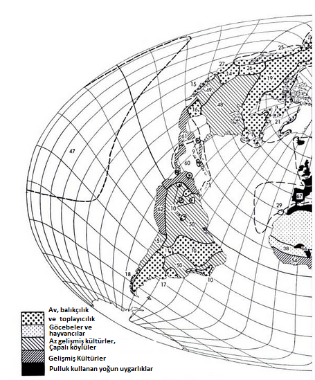
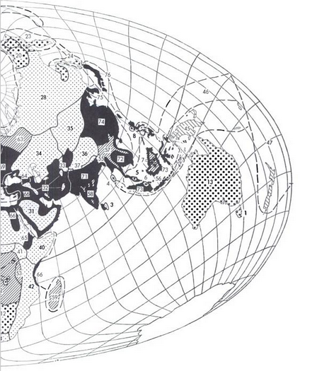
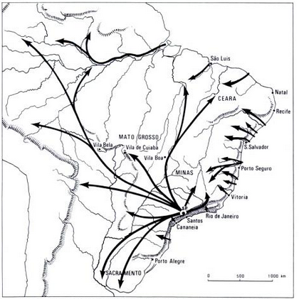

1500'LERE DOĞRU UYGARLIKLAR, KÜLTÜRLER VE İLKEL HALKLAR
1. Tasmanyalılar 2. Kongo Pigmeleri 3. Vedalar (Seylan) 4. Andamanlar 5. Sakaylar ve Semanglar 6. Kabuslar 7. Punanlar (Borneo) 8. Filipinler Negritoları 9. Siboney (Antiller) 10. Ge-btoküdolar 11. Büyük Şako Kızılderilileri 12. Boşimanlar 13. Avustralyalılar 14. Büyük Havza (ABD) 15. Aşağı Kaliforniya 16. Teksas ve Kuzeydoğu Meksika 17. Patagonya 18. Şili'nin güney kıyıları kızılderilileri 19. Atabasklar ve Algokenler (Kuzey Kanada) 20. Yukagirler 21. Merkez ve Doğu Eskimoları 22. Batı Eskimoları 23. Kamçadaller, Koryaklar, Çukçlar 24. Aynolar, Gilyaklar, Goldlar 25. Kuzeybatı kıyısı Kızılderilileri (ABD ve Kanada) 26. Kolombiya yaylası 27. Merkez Kaliforniya 28. Ren geyiği yetiştiricisi halklar 29. Kanarya Adaları 30. Sahra göçebeleri - Arabistan göçebeleri 32. Yakın Doğu dağ çobanları 33. Pamir ve Hindukuş çobanları 34. Kazaklar, Kırgızlar 35. Moğollar 36. Tibetli çobanlar 37. Yerleşik Tibetliler 38. Batı Sudanlılar 39. Doğu Sudanlılar 40. Kuzeydoğu Afrika: Somali ve Galla 41. Nil halkları 42. Doğu Afrika hayvan yetiştiricileri 43. Batı Bantuları 44. Hotantolar 45. Amerika Kızılderilileri (ABD'nin batısı) 50. Brezilya yerlileri 51. Şili yerlileri 52. Kongo halkları 53. Doğu Afrika Göller bölgesi halkları 54. Gine kıyıları 55. Assam ve Birmanya'nın yüksek bölgelerindeki kabileler 56. Endonezya'nın yüksek bölgelerindeki kabileler 57. Hindiçini ve Güneybatı Çin'in yüksek bölgelerindeki halklar 58. Merkezi Hindistan'daki dağ ve orman kabileleri 59. Malgaşlar 60. Karayipler 61. Meksikalılar, Mayalar 62. Perulular ve Andlılar 63. Finliler 64. Kafkasyalılar 65. Habeşler 66. Yerleşik Müslümanlar 67. Güneybatı Avrupa 68. Doğu Akdeniz 69. Doğu Avrupa 70. Kuzeybatı Avrupa 71. Hindistan (harita Müslümanlarla hinduları ayırmıyor) 72. Güneydoğu Asya ovaları 73. Endonezya ovaları 74. Çinliler 75. Koreliler 76.Japonlar (G. W. Hewes'a göre)
Fakat bizim için çok düşük olan bu düzeyler, daha o sıralar aşikâr olan aşırı nüfusları işaret etmektedirler. XVI. yüzyılın başında Almanya'nın en kalabalık bölgesi olan Wurtenberg (km2'ye 44 kişi)85 paralı askerlerin en mükemmel devşirilme alanıydı; Fransa yoğunluğu 34 olan, geniş bir dışa göç bölgesidir. İspanya'nın yoğunluğu ise yalnızca 17'dir. Ancak İtalya ve Alçak Ülkeler (bugünkü Hollanda ve Belçika) engin ve daha şimdiden “endüstrileşmiş” oldukları için, daha ağır bir insan yükünü ışımaktadırlar ve bunların büyük kısmını kendi evlerinde muhafaza etmektedirler. Çünkü aşırı nüfus hem insan sayısının hem de elde bulunan kaynakların işlevindedir.
A. P. Usher tarihsel nüfusbilim alanında üç nüfus düzeyini birbirinden ayırmaktadır. En alt basamakta öncü bölgelerin nüfusu yer almaktadır (Bunu frontier Amerika'sını düşünerek söylemektedir), yani insan tarafından işlenmemiş veya az işlenmiş bir mekânda, iş başında olan bir nüfus. Nüfus ikinci aşamasında (XVIII. yüzyıldan önceki Çin ve Hind, XII. veya XIII. yüzyıldan önceki Avrupa) km2'ye 15 ve 20 kişi arasında yer almaktadır. Sonra, km2'ye 20 kişinin ötesinde “yoğun” nüfus gelecektir. Bu sonuncu rakam belki de fazla mütevazidir. Ama 1600'den itibaren İtalya, Alçak Ülkeler ve Fransa için işaret ettiğimiz yoğunluklar (44, 40, 34) geleneksel ölçülere göre, daha şimdiden, bir nüfus basıncına tekabül etmektedirler. Jean Fourastie'nin Eski Rejim Fransa'sı için yaptığı hesaplara göre, nadası da hesaba katarak, bir insanın iaşesi için 1,5 hektar işlenebilir toprak gerekmekteydi. Bu aşağı yukarı Daniel Defoe'nun 1709'da sağladığı miktara eşittir: 3 akr iyi toprak veya 4 akr orta toprak (yani, 1,2-1,6 ha.) Her nüfus basıncı, ileride göreceğimiz üzere, ya gıda seçimi (özellikle etle ekmek arasında) ya tarımda dönüşümler ya da dış göçe geniş ölçekte başvurmayı gerektirmektedir.
Bu işaretler bizi yalnızca, bir nüfus tarihinin esas sorunlarının eşiğine kadar götürmektedir. Bize aynı zamanda, diğer şeylerin arasında, kentsel ile kırsal nüfus arasındaki oranı (bu oran bir eski gelişme tarihinin esas göstergesi olduğu için) bilmek ve beşeri coğrafyanın ölçülerine göre, kırsal gruplanmaları daha iyi bilmek de gerekmektedir. XVIII. yüzyılın sonunda St. Petersburg yakınlarında Finlandiyalı köylülerin iğrenç köyleri, birbirlerinden çok uzak olmak üzere dağılmaktadırlar; Alman göçmenlerinin köyleri bir araya toplanmaktadır; Rus köyleri ise bunlara kıyasla çok büyük toplanma yerleridir. Alplerin kuzeyindeki Orta Avrupa oldukça zayıf köylere sahiptir. Bohemya'da Avusturya sınırı yakınlarında Rosenberglerin, sonra da Schwarzenberglerin malikânelerinin eskiden kapladığı alanlarda, balıklarla dolu yapay göller arasında -aynı şekilde Varşova merkez arşivinde- birçok kereler köy arazilerine ait planları görme fırsatım olduğu için, XVII. ve XVIII. yüzyıllara ilişkin, Orta Avrupa'nın sayıları artan bu köylerinin küçüklüğünden şaşkına döndüm: çoğu zaman on kadar ev... İtalya'nın köy-kentlerinin veya Ren, Meuse ve Paris havzalarının büyücek kasabalarının uzağındayız. Öte yandan, Doğu ve Orta Avrupa'nın çok sayıda köyü için geçerli olan bu zayıflık, köylülüğün kaderinin esas nedenlerinden biri değil midir? Köylülük senyörlerin karşısında, büyük cemaatlerin dirsek temasından yoksun olduğu ölçüde çaresiz kalmıştır?
En azından üç şey:
1. “Kültürlerin” (şu ilk başarılar) ve “uygarlıkların” (insanların şu ikinci başarıları) yerlerinin büyük sabitliği, çünkü bu yerleşim yerleri bugünkü zamandan itibaren basit regresyon yöntemiyle yeniden oluşturulmuşlardır. Sınırların da sabitliği vardır. Demek ki bunların toplanma alanları Alpler, Gulf Stream veya Ren yatağı kadar güçlü bir coğrafya çizgisidir.
2. Bu harita, Avrupa'nın zafere ulaşmasından önce de, dünyanın tümünün daha o sıralarda bile insan tarafından yüzyıllar, hatta binyıllardan beri tanındığını, kavrandığını da göstermektedir. İnsan ancak kocaman engeller karsısında duraklamıştır: denizin azametli hale geldiği kesimler, aşılması güç dağlar, orman kitleleri (Amazon, Kuzey Amerika, Sibirya ormanları), muazzam çöller, ve üstelik, eğer yakından bakılacak olursa, insanları maceraya sevketmemiş ve sırlarını açık etmemiş deniz yüzeyi de yoktur (Hind Okyanusunun muson rüzgârları Eski Yunan Antikite'sinden beri bilinmektedir); geçitlerini ve aşılma noktalarını acık etmemiş dağ yoktur; insanın içine giremediği orman, aşamadığı çöl yoktur. Dünyanın “iskân edilebilir ve tekneyle seyredilebilir” mekânının, hiç kuşku yoktur ki, en küçük parçası bile 1500'den önce (ve 1400'den veya 1300’den önce) sahiplidir, bir kullananı vardır. Eski Dünya'nın itici çölleri bile, 30-36 numaralar altında, bu bölümde onlardan söz etme fırsatımızın olacağı savaşçı büyük göçebeleri barındırmaktadır. Kısacası dünya, “eski barınağımız” büyük keşiflerden çok önce, uzun zamandan beri “keşfedilmiş” durumdadır. Bitki zenginliklerinin bilançosu da “yazılı tarihin başından beri” o kadar büyük kesinlikle çıkartılmıştır ki, “eskiden beri bilinen genel yarara sahip besleyici bitki listesine hiçbir yenisi eklenmemiştir, çünkü ilkel halkların bitki alemini tabi tuttukları keşif dizileri dikkatli ve tam olmuştur.”

BREZİLYA BANDEİRALARI (XVI.-XVIII. YÜZYILLAR)
Bandeiralar özellikle Sao Paolo kentinden (haritada S.P.) itibaren yola çıkmaktadırlar. Sao Paololular Brezilya'nın tüm iç kesimlerini dolaşmışlardır (A. d'Escragnolle-Taunay'ye göre)
Demek ki Amerika'yı veya Afrika'yı keşfedecek olan; ne de esrarlı kıtaların ırzına geçecek olan Avrupa'dır. Eskiden o kadar övünme konusu olan, Orta Afrika'nın XIX. yüzyıldaki kâşifleri zenci hamalların sırtında dolaşmışlardır ve aynı zamanda Avrupa'nınki de olan en büyük hataları, bir cins Yeni Dünya keşfetmekte olduklarına inanmaları olmuştur. Aynı şekilde, Güney Amerika kıtasının kâşifleri, hatta XVI., XVII. ve XVIII. yüzyıllarda harika efsaneleri olan şu pandeirautes paulistas (1554'te kurulan Sao Paolo kentinden yola çıktıkları için) Kızılderililer tarafından kullanılmış olan eski yol ve nehirleri yeniden keşfetmekten başka bir şey yapmamışlar ve onlara genellikle ellerinden tutarak rehberlik edenler, melezler (Portekizli ve Kızılderili melezleri) Mamelucos olmuştur. Aynı macera XVII. ve XVIII. yüzyıllarda Fransızların çıkarma olmak üzere ve Büyük Göllerden Mississippi'ye kadar olan bölgede, Kanadalı melezler olan “Bois Brules” sayesinde yaşanmıştır. Avrupa dünyayı, çoğu zaman başkalarının gözleri, bacakları ve aklıyla yeniden keşfetmiştir.
Avrupa'nın özgün olarak başardığı şey, Atlantiğin keşfi, bu okyanusun zor mekânlarına, akıntılarına, rüzgârlarına egemen olmasıdır. Bu gecikmiş zafer bundan sonra, dünyanın deniz birliğini beyaz adamın emrine vermiştir. Muzaffer Avrupa, filolar, tekneler, gene tekneler, denizlerdeki dümen suları demektir; denizciler halkı, limanlar, tersaneler demektir. Büyük Petro Avrupa'ya yaptığı ilk yolculukta bu konuda yanılmamıştır: Hollanda'da Amsterdam yakınlarındaki Saardam tersanelerinde çalışacaktır.
3. Sonuncu işaret: yoğun nüfuslu dar alanlar her zaman türdeş değillerdir. Sağlam bir şekilde elde tutulan bölgelerin (Batı Avrupa, Japonya, Kore, Çin) yanında Filipinler, Endonezya ve Hindiçini, gerçeği söylemek gerekirse birkaç meskun bölgenin serpintisinden ibarettirler; bizzat Hindistan, katışık uygarlıklar tarafından tam anlamıyla elde edilememiştir; İslam dünyası boş mekân marjları üzerinde, Kara Afrika'nın böğrüne yapışmış çöllerin, nehirlerin, denizlerin kıyısında bir dizi, sahel'den (sahil) ibarettir -Esirler kıyısında (Zanzibar) olduğu kadar, savaşçı imparatorluklar kuran ve yeniden kuran Nijer boynuzunda da durum böyledir-. Avrupa bile, doğusuna doğru gidildiğinde, vahşi uçların ötesinde boşluğa açılmaktadır
Yalnızca uygarlıkları görme eğilimi her zaman büyük olmuştur, uygarlıklar esastır. Ayrıca, eski çehrelerini, aletlerini, kıyafetlerini, konutlarını, uygulamalarını, hatta geleneksel şarkılarını yeniden bulabilmek için beceri hazineleri sarfetmişlerdir. Müzeleri bizi beklemektedir. Her birinin “parçası” bilinen kendi renklerine sahiptir. Her şey burada, çoğu zaman özgündür. Çin değirmeni yatay dönmektedir; İstanbul'da makas bıçakları geniş içbükey iç oyuklara sahiptir, lüks kaşıklar armut ağacındandır; Kızıldeniz ve İran körfezi gemilerinde tek bir çivi bile yoktur... Ve her “parça” kendi bitkilerine, kendi evcil hayvanlarına her halükârda onlara karşı kendine özgü davranış biçimlerine, kendi tercihli evlerine, kendine özgü gıdalara sahiptir...- Basit bir mutfak kokusu bir uygarlığın tümünü hatırlatabilir.
Ancak bu uygarlıklar insanların dünyasının ne tüm güzelliği ne de tüm tadıdır. Onların dışında, bazen onların bizatihi kitlesini kateden veya dış hatlarını çevreleyen ilkel hayat içeri nüfuz etmekte ve geniş alanlar boş sesi vermektedirler. İnsanların ve vahşi hayvanların kitabını veya sopalı köylülerin eski tarımlarının altın kitabını hayal etmek gerekir; uygarların gözünde burası cennettir, çünkü onlar fırsat çıktığında, üzerlerindeki zorlamalardan burada kurtulmaktadırlar.
Bu vahşi insan gruplarına dair en çok imgeyi Uzak Doğu; Filipin ve Endonezya adalarında, Çin dağlarında, Japonya'nın Yeso adasının kuzeyinde Formoza'da veya Hindistan'ın zıtlıklarla dolu merkezinde verecektir. Avrupa kendi evinde iskân ettiği bu cins “vahşiler”e, “açıklık alanlarının kuru toprakları üzerinde pirinç yetiştirmek üzere, yukarılardaki ormanı yiyen” şu yakıcı insan topluluklarına sahip değildir. Avrupa dağlılarını erkenden evcilleştirmiş, onlara paryaymışlar gibi davranmayarak kendine alıştırmıştım Uzak Doğu'da bunun tersine, bu bağlantılar veya bu karmaşıklıklar yoktur. Sayılamayacak kadar çok şok, burada acımasız bir sertlik içindedir. Çinliler leş gibi evleri olan ve hayvan yetiştiren kendi dağlılarıyla mücadele etmeye ara vermemişlerdir. Aynı çatışmalar Hindistan'da da vardır. 1565'te Dekkan yarımadasında, Talikota savaş alanında, Vijyanagar Hindu krallığı kuzeyin müslüman sultanlarının süvari ve topçusu tarafından ölümüne vurulmuştur. Muazzam başkent galip tarafından hemen işgal edilmemiştir, fakat savunmasız kalmıştır, çünkü orduyla birlikte giden araba ve koşum hayvanlarından mahrumdur. Bu durumdayken, çevredeki cangılların vahşi halkları olan Brincariler, Lambadiler, Kurubalar onu tepeden tırnağa yağmalamak için üzerine çullanmışlardır.
Fakat bu vahşiler daha o sıralarda bile, aşırı gururlu, uygarlıklar tarafından hapsedilmiş, çember içine alınmış gibidirler. Gerçek vahşi adamlar başka yerlerde, aslında korkunç olan topraklarda tam özgürdürler ve yoğun nüfuslu ülkelerin sınırlarında yaşamaktadırlar; bunlar Friedrich Ratzel’in Randvolker'i, marjinal halklar, geschichtes halklar, Alman coğrafyacı ve tarihçilerin tarihsiz halklarıdır (ama acaba bu doğru mudur?). Dün Sibirya'nın Büyük Kuzey'inde u 12.000 Çukt 800.000 km2 üzerinde, bin kadar Samoyed buzlu Yamal yarımadasının 150.000 km2'si üzerinde yaşamaktaydı.” Çünkü “bunlar genelde en fazla mekâna ihtiyaç duyan en ilkel gruplardır” bu ifadeyi reddetmeksizin; muazzam ama hasım mekânlar üzerinde ancak kök ve yumru toplayan veya vahşi hayvanlara tuzak kuran ilkel bir hayat ayakta kalabilir.
Her halükârda, insan nadirleşir nadirleşmez, mekân yetersiz veya kullanılamaz olsa bile, vahşi hayvanlar etrafta kaynamaya başlamışlardır. İnsandan uzaklaşmak, onlarla karşılaşmak demektir. Seyahat anlatıları okunduğunda, dünyanın tüm hayvanları size doğru gelmektedir. İşte köylerin ve kentlerin etrafında dolanan, bir XVII. yüzyıl seyyahının anlattığına göre, Ganj deltasında kayıklarında uyuyan balıkçıları, yüzerek gelip gafil avlayan Asya kaplanı; Uzak Doğu'da bugün bile dağ mezralarının etrafındaki ağaçlar, korkutucu insan yiyiciyi uzaklaştırmak üzere sökülmektedirler. Gece geldiğinde, evlerin içinde bile kimse kendini güvenlikte hissetmemektedir. Cizvit peder Las Cortes ve sefalet arkadaşlarının ikamet ettikleri, Kanton yakınlarındaki küçük bir kentte (1626) bir adam kulübesinden çıkar: kaplan onu kapar. XIV. yüzyıla ait bir Çin resmi, meyva ağaçlarının çiçek açmış dalları arasında, üzerinde gül lekeleri olan muazzam bir kaplanı, sanki alışık olunan bir canavarmış gibi göstermektedir. Gerçeği söylemek gerekirse, bu Uzak Doğu'nun tümü için pek büyük bir abartma değildir.
Siyam da bir vadiden ibarettir, Menam vadisi; buradaki sular üzerinde kazıklar üzerindeki ev sıraları, pazarlar, kayıklara yığılmış aileler; kıyılarda başkent de dahil birkaç kent, pirinç tarlaları; suyun muazzam alanlara yayıldığı geniş ormanlar bulunmaktadır. Sularda sürekli olarak arınmış nadir orman plakaları vahşi kaplan ve fil, hatta E. Kampfer'in iddia ettiği üzere dağ keçisi barındırmaktadır. Öteki canavarlar olan arslanlar Etopya'da, Kuzey Afrika'da, İran'da Basra yakınlarında veya Hindistan'ın Afganistan'a doğru olan kuzey-batı yolu üzerinde hüküm sürmektedirler. Filipin nehirlerinde timsah kaynamaktadır, yaban domuzları Sumatra'nın, Hindistan'ın kıyı ovalarında, İran yaylalarında efendidirler; yabani atlar Pekin'in kuzeyinde düzenli olarak avlanmakta ve. kementle yakalanmaktadır. Yaban köpekleri Trabzon dağlarında ulumakta ve Gemelli Careri'nin uyumasına engel olmaktadırlar. Gine'de küçük inekler vahşidir ve bütün avcılar bunların üzerine üşüşmektedir; buna karşılık herkes aynı bölgelerde “pirinç, darı ve başka sebze...” tarlalarını çiğneyen şu fil ve suaygırı sürülerinden kaçmakta ve bazen bunların “hepsi bir arada üç veya dört yüzlük sürüler oluşturdukları görülmektedir.” Ümit Burnu'nun ötesinde çok uzaklara kadar boş, insani olmayan muazzam Güney Afrika'da ve “yaşama biçimi olarak insanlardan çok hayvanlara benzeyen” çok az sayıda insanın yanı sıra, “korkunç” hayvanlara, dünyanın en büyükleri olma ününe sahip çok sayıda arslan ve file rastlanmaktadır. Bu, yüzyılları aşarak, kıtanın iki ucunda, Kartaca ve Anibal dönemlerinde, Kuzey Afrika fillerini hayal etmenin fırsatıdır. Aynı zamanda gene kuzeye doğru, ama Kara Afrika'nın göbeğinde, XVI. yüzyıldan itibaren Avrupalılara muazzam miktarlarda fildişi sağlamış olan gerçek fil avcılarını da hayal etmenin fırsatıdır.
Kurtlar için, Urallardan Cebelitarık boğazına kadar bütün Avrupa ve ayılar için de, bu kıtanın tüm dağları onların mekânıdır. Kurtların aynı anda her yerde birden bulunmaları, yol açtıkları dikkat, kurt avını kırların, hatta kentlerin sağlığının göstergelerinden biri, geçen yılların kalitesinin göstergelerinden biri haline getirmektedir. Bir anlık dikkatsizlik gerileme, sert bir kış, kurtlar hemen çoğalmaktadır 1420'de kurt sürüleri sur yarıklarından ve kötü korunan kapılardan geçerek, Paris'e girmişlerdir; 1438'de bunlar bu kez Paris'in içinde Montmartre ile Saint- Antoine kapısının arasında insanlara saldırmaktadırlar. Kurtlar 1640'ta Doubs nehrini kent değirmenlerinin yakınında aşarak, Besançon'a girmişler ve “sokaklarda çocukları yemişlerdir. 1520'ye doğru 1. François tarafından ihdas edilen bir memuriyet olan Büyük kent avcıları, senyör ve köylülerin de çağrıldıkları büyük temizlik harekâtlarına girişmişlerdir; örneğin 1765 gibi ileri bir tarihte bile, Gevaudan'da “kurtların yol açtığı felâketler, canavar gibi bir hayvanın varlığına inanılmasına yol açmıştı.” Bir Fransız 1779'da “bundan 600 yıl kadar önce olduğu gibi, bugün Fransa'da kurt cinsi ortadan kaldırılmak isteniyora benzemektedir, fakat bu işin Büyük Britanya gibi bir adada uygulanabilmiş olmasına rağmen, bizimki gibi çok geniş ve dört bir yanı açık bir ülkede, tam anlamıyla gerçekleştirilmesi kolay değildir...” diye yazmaktadır. Fakat 1783'te ticaret odası temsilcileri, “nüfusun büyük kısmını yok etmek üzere İngiltere’den belli sayıda kurt getirilmesine yönelik, birkaç yıl önce verilmiş öneriyi tartışmakta değiller miydi? Kıtanın topraklarıyla, Uzak Almanya veya Polonya ormanlarıyla kaynaşmış olan kurtlara ilişkin olarak bile, Fransa dönemeç olma gibi bir coğrafi konumda olmasından kurtulamamaktadır. 1851'de bile Vercors'da kurt kaynamaktaydı.
Daha eğlenceli seyirlik olaylar dağtavukları, sülünler, beyaz tavşanlar, Alplerin beyaz keklikleri; 1494'te dostlarıyla birlikte Valencia'nın arkasındaki dağlık bölgede yolculuk yapan şu Nurembergli tabip Thomas Münzer'in atlarını Malaga yakınlarında havaya kaldıran kınalı keklikler tarafından sunulmaktadır. Veya XVI. yüzyılın başında Wurtemberg'deki Rauhe Alb bölgesindeki vahşi hayvan dalgaları tarafından sunulmaktadır; ancak köylülerin onlara karşı büyük köpekleri kullanmaları yasaklanmıştır; yalnızca orman koruyucularının buna hakları vardır. İran'da yaban domuzları, geyikler, alageyikler, gazeller, arslanlar, kaplanlar, ayılar, tavşanlar artı muazzam miktarda güvercin, yabankazı, ördek, kumru, karga, balıkçıl ve iki cins keklik kaynamaktadır...
Doğal olarak boşluk ne kadar genişse, hayvan hayatı o kadar artmaktadır. Peder Verbiest, 1682'de Çin imparatorunun muazzam maiyetiyle (100.000 at) birlikte seyahat ettiği Mançurya'da, yorgunluktan bitkin bir şekilde, homurdanarak akıl almaz avlara tanık olmuştur: tek bir günde 1.000 geyik, 60 kaplan öldürülmüştür. 1639'da henüz mekândan yana boş olan Mauritius adasında kumrular ve tavşanlar o kadar çok sayıda ve insandan o kadar korkusuzdurlar ki, elle yakalanmaktadırlar. 1690'da Florida'da yabani güvercinler, papağanlar ve diğer kuşlar o kadar çokturlar ki, “çoğu zaman tekneler dolusu yumurta ve kuş götürülmektedir.”
Tabii ki Yeni Dünya'da her şey abartılmaktadır; boş alanların (despobladosl aşırı bolluğu söz konusudur ve bunların arasında muazzam mesafeler ve birkaç minik kent bulunmaktadır. Sonradan Arjantin olacak yerde, Cordoba'dan Mendoza'ya gitmek için, Santiago de Chili piskoposu Lizarraga'ya refakat eden, 30 çift öküz tarafından çekilen 12 büyük ahşap arabanın hızıyla 20 gün kadar süren bir zaman gerekmiştir. Devekuşu, lama ve güneyin deniz sınırları dışta bırakılırsa, çok az yerli hayvan vardır. Buna karşılık, boş ülke Avrupa'dan getirilen ve kendiliklerinden çoğalan hayvanlar (at, büyük başlar) tarafından işgal edilmiştir. Muazzam yabancı sığır sürüleri ova boyunca düzenli “transhümans” yolları çizmiştir ve XIX. yüzyıla kadar özgürlük içinde soylarını sürdürmüşlerdir. Birbirlerinin üzerine yığılan yabani at sürüleri, bazen ufukta belli belirsiz tepeler resmetmektedirler. Acaba Lizarraga'nın, Amerika'ya yeni gelen ve eski baquiatio'nun haklı olarak alay ettiği chapetanos palavralarını ciddiye almak iyi bir öykü verecek midir? “Küçük bir parmak büyüklüğünde” bile bir odun parçasının bulunmadığı bu Pampa'da, bir chapeton uzakta bir tepecik, bir monte görür ve “hadi oradan odun kesmeye gidelim” diyerek sevinir.
Bu öykü üzerinde duraklamak mümkündür. Fakat imge avcılığı konusunda daha iyileri bulunmaktadır: örneğin, Amerika'nın doğusunun Batı Avrupalılara açıldığı sıralarda, Ruslara açılan Sibirya'da olduğu gibi. 1776 Mayısında, Rus subayları Omsk'u çok erkenden terk etmişler ve Tomsk'a doğru yollarına devam etmektedirler, nehirler azmış durumdadır. Ob nehrini, orada çırpıştırılıverilmiş (birbirlerine bağlanmış ağaç gövdelerinden) bir kayıkla inmek gerekmektedir. Askeri hekimin (köken olarak İsviçreli) söylediklerine göre, bu tehlikeli yolculuk en azından eğlendiricidir...: “üzerlerinde tilki, tavşan ve kastorların çok sayıda olduğu en azından elli ada saydım, bunlar o kadar kalabalıktılar ki, suya kadar geldikleri görülmekteydi... dişi bir ayının dört yavrusuyla birlikte nehir kenarında dolaşmasını zevkle seyrettik...” Bunlara “korkutucu sayıda leylek, turna, pelikan, yabankazını... çeşitli yaban ördeklerini (özellikle kırmızı olanlarını) ekleyiniz. “Bataklıklar balabankuşu ve çullukla dolu ve ormanlarda tavuk, çalı horozu ve diğer kuşlar kaynıyor... Güneş battıktan sonra kanatlı yaratık orduları bağrışlarıyla öyle korkutucu bir şamata yapmaktaydı ki kendi sesimizi bile duyamıyorduk.” Sibirya'nın ucunda, âdeta tamamen boş bir yarımada olan Kamçatka, XVIII. yüzyılın başıyla birlikte yavaş yavaş canlanmaktadır. Kürk hayvanları avcı ve tüccarları buraya çekmekte, bu sonuncular hayvan derilerini Irkutsk'a götürmekte, deriler buradan da yakındaki Kinkta fuarı aracılığıyla Çin'e ya da Moskova'ya ve Batı'ya gitmektedir. Deniz lutr'unun moda olması bu sırada ortaya çıkmıştır. Bu kürk o zamana kadar ancak avcıların ve yerlilerin giyiminde işe yaramaktaydı. Fiyatlar gürültülü bir şekilde artınca, avcılık aniden genişlemiş, devasa boyutlara ulaşmıştır. 1770'lere doğru avcılık muazzam bir organizasyon haline gelmiştir. Ökotsk'ta inşa edilen ve donatılan teknelerin çok sayıda mürettebatı vardır, çünkü çoğu zaman kötü muamele edilen yerliler onlara düşmandır; bazen bir geminin tayfalarını katletmekte, tekneyi de yakmaktadırlar. Öte yandan, dört yıllık erzak götürmek uzaklardan peksimet ve fahişe getirtmek gerekmektedir. Bunun sonucunda muazzam iaşe harcamaları ortaya çıkmakta, bu da işletmeyi uzaktaki Irkutsk tüccarlarının eline düşürmektedir: bunlar bir hisse senedi sistemiyle masraf ve kârları paylaşmaktadırlar. Yolculuk Aleut adaları yayına kadar uzanmakta ve dört veya beş yıl sürebilmektedir. Av lutrların kaynadığı nehir ağızlarında yapılmaktadır. Veya “tuzakçı”, pronisçlennik, nefes almak için su yüzüne çıkmak zorunda olan hayvanları kano ile izlemekte, veyahut da ilk buz tabakalarının oluşmasını beklemektedir: bu durumda avcılar ve köpekler, suyun dışında çok beceriksiz olan lutrlara, kolaylıkla ulaşmakta, birinden diğerine koşarken onları bayıltmakta, haklama işini sonraya bırakmaktadırlar. Bazen buzuldan bazı parçalar kendiliklerinden kopmakta ve avcıları, köpekleri ve lutr cesetlerini açığa sürüklemektedir. Kuzey denizinde buzlar arasına sıkışan teknenin yiyecek ve içeceksiz kaldığı da olmaktadır. Tayfalar bu durumda çiğ balık yemek zorunda kalmaktadırlar. Bu zorluklar avcıların hücumunu engellememektedir. 1786'ya doğru Kuzey Pasifik denizlerinde İngiliz ve Amerikan tekneleri görülmeye başlamıştır. Bu oyun esnasında Kamçatka çabucak güzel hayvanlarını kaybetmiştir; avcılar daha uzaklara, Amerikan kıyılarına, hata Ruslar ve İspanyolların XIX. yüzyılın başında büyük tarihin ilgisini çekmeden sürtüşecekleri San Francisco yakınlarına kadar ilerlemek zorunda kalmışlardır.
XVII1. yüzyılın sonlarında bile, muazzam mekânlar üzerinde, dünyanın bir cins ilkel yaşamı bulunmaktadır; bu cennetlerin ortasında zuhur eden insan, buraları için trajik bir yenilik unsuru olmuştur. 1 Şubat 1793'te, Çin'e elçi Macartney'i götüren The Lion adlı yelkenlinin Hind Okyanusunda 40° güney enleminde, Amsterdam adasında, hepsi de korkunç derecede pis beş kişi bulunmasını (üç Fransız, iki İngiliz) yalnızca kürk çılgınlığı açıklayabilir. Kanton'da ya Amerikan kastor derisi ya da bizzat adadan elde edilen deniz sığırı derisi satan, Boston limanına kayıtlı tekneler, bu beş kişiyi daha önceki geçişlerinde adaya indirmişlerdir. Bunlar devasa katliamlar örgütlemişlerdir (bir yaz mevsiminde 25.000 hayvan). Bu foklar adanın yegâne faunası değildi, aynı zamanda penguenler, balinalar, köpek balıkları, deniz köpekleri ve sayılamayacak kadar çok balık vardı. “Birkaç olta, birkaç iğne ile The Lion mürettebatını bir hafta doyuracak balık yakalanıyordu.” Tatlı suların ağızlarında yeşilsazan, levrek, bundan da fazla tatlısu ıstakozu kaynamaktaydı: “tayfalar suya, içine köpekbalığı etinden yem koydukları sepetleri daldırıyorlar ve birkaç dakika içinde yarı yarıya dolan bu sepetleri yukarıya çekiyorlardı.” Başka harikalar, kuşlar, sarı gagalı albatroslar, büyük kara fırtınakuşları, gümüş kuşu denilen kuşlar, mavi fırtınakuşları ki, bunlar gece kuşları olup, av kuşlarıyla veya meşale yakarak onları kendilerine çeken fok avcıları tarafından kovalanıyorlardı, öylesine ki, avcılar onlardan “bir sürüsünü öldürüyorlardı, hatta bu kuş onların başlıca gıdasıydı ve etinin mükemmel olduğunu söylüyorlardı. Mavi fırtınakuşu aşağı yukarı bir güvercin büyüklüğündedir...”
Gerçekte, XVIII. yüzyıldan önce cangıl kitabı hemen hemen her yerde açılabilirdi. İçinde kaybolmadan önce onu kapatmak akıllıca olacaktır. Ama insan iskânının zayıflıkları hakkında ne tanıklık!